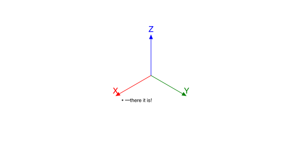

The basics
Thebes.jl is a small package that adds some simple 3D features to Luxor.jl.
Another reminder: Thebes.jl is capable of a few wireframe constructions in 3D. Don't expect a comprehensive range of 3D modelling and rendering tools. Use Makie.jl!
The 3D world of Thebes is superimposed on the 2D world of Luxor:
rulers() # a Luxor fuction
axes3D() # a Thebes function
There are two main things you have to know in order to draw in 3D:
the
Point3Dtype specifies the x, y, and z coordinates of a point in 3D space.there's a function called
pin()that places the 3D points on the Luxor drawing surface.
pin() can perhaps be thought of as "pinning" a 3D coordinate onto the 2D flat drawing surface. If I think of a better name for this function, I might change it, but I wanted to avoid everything obvious, like "draw", "render", "display", etc.
A simple example
Here's a complete example showing Thebes and Luxor working:
using Thebes, Luxor
Drawing(600, 300, "assets/figures/simpleexample.svg")
setline(1)
background("white")
origin()
axes3D()
p1 = Point3D(100, 20, 0)
loc = pin(p1)
label("there it is!", :e, loc + (4, 4), offset=10, leader=true)
finish()
Behind the scenes, there's a current viewing projection, but you don't need to worry about it yet.
Point cloud
We can do lots of these - here's half a million or so.
background("black")
setopacity(0.5)
sethue("gold")
c = pin.([Point3D(randn() * 50, randn() * 50, randn() * 50)
for x in 1:75, y in 1:75, z in 1:75], gfunction = (pt3, pt2) -> begin
circle(pt2, 1, :fill)
end)
axes3D()
length(c)421875

Dots
Let's draw a helix:
axes3D()
helix = [Point3D(100cos(θ), 100sin(θ), 10θ) for θ in 0:π/24:4π]
pin.(helix)
finish()
gfunctions
It's true that this default appearance of a 3D point is pretty basic. But you can modify the graphics drawn at each location by passing a function to the pin() function's optional gfunction keyword argument.
Suppose you want to draw a randomly colored circle at the location, with radius 5 units.
axes3D()
helix = [Point3D(100cos(θ), 100sin(θ), 10θ) for θ in 0:π/24:4π]
pin.(helix, gfunction = (_, pt) -> begin
randomhue()
circle(pt, 5, :fill)
end)
finish()
The gfunction require two arguments: the first contains the 3D point, the second contains the 2D point. The function then has the responsibility to draw the graphics for that point. This gives us more control over the rendering of the points. If you want Luxor stars, you use the second argument - you don't need the first:
axes3D()
helix = [Point3D(100cos(θ), 100sin(θ), 10θ) for θ in 0:π/24:4π]
pin.(helix, gfunction = (_, pt) -> begin
randomhue()
star(pt, 5, 5, 0.5, 0.0, :fill)
end)
finish()
The next, slightly more complicated, gfunction calculates the distance of the point from the origin, and then draws the circle with a radius that reflects this. The function therefore requires both the original 3D point (in the first argument p3) and the second argument (in p2), its 2D projection.
axes3D()
helix = [Point3D(100cos(θ), 100sin(θ), 10θ) for θ in 0:π/24:4π]
pin.(helix, gfunction = (p3, p2) -> begin
d = rescale(distance(p3, Point3D(0, 0, 0)), 100, 200, 1, 10)
circle(p2, d, :fill)
end)
finish()
Notice that all the graphics are 2D graphics. This isn't real 3D, remember. The human brain is quite adaptable, though.
In this example, each point is drawn twice, to make shadows.
using Thebes, Luxor
Drawing(600, 500, "assets/figures/points-shadows.svg")
origin()
background("grey10")
eyepoint(Point3D(250, 250, 100))
sethue("grey50")
carpet(300)
axes3D(100)
sethue("red")
for i in 1:300
randpoint3D = Point3D(rand(0.0:200, 3)...)
sethue("red")
pin(randpoint3D,
gfunction = (p3, p2) -> circle(p2, 2, :fill))
sethue("grey30")
pin(Point3D(randpoint3D.x, randpoint3D.y, 0),
gfunction = (p3, p2) -> circle(p2, 2, :fill))
end
finish() # hide
nothing # hide
Lines
Dots are all very well, but suppose we wanted to draw a line? pin() also accepts two 3D points.
This code uses the same points from the helix, this time drawing a line from each point to the nearest point on the vertical z axis.
axes3D()
helix = [Point3D(150cos(θ), 150sin(θ), 5θ) for θ in 0:π/48:4π]
setline(0.5)
for p in helix
pin(p, Point3D(0, 0, p.z))
end
finish()
The default gfunction's arguments consist of two pairs of points (a pair of 3D points, and a pair of 2D points), not just two points. Luxor's trusty old line() function connects the 2D pair.
When things go wrong
In 2D graphics, there can occasionally be a few problems caused when values get close to zero or infinity. The same thing is true for 3D too, when the coordinates start stressing out the projecting equations. Really good 3D software will prevent this happening. In Thebes, though, you may occasionally see glitches. You're only seeing half the "world" that's in front of you - there's nearly a whole half-world falling being the eye-position, and this means that some points don't get succesfully drawn.
In general, if the pin() function can't display a point, it will probably just drop it and carry on, rather than attempt to draw things in impossible locations or straight lines that curve in space. So if you notice parts of your drawing missing, the easiest thing to do is to move the eyepoint further away, and hope that any lines don't end up too close to it.
Conversions
The convert() function provides a useful way to convert 2D coordinates to 3D. If you can generate your points in 2D, then you can convert them to 3D, and then use pin() to project them back into two dimensions. This example shows how to draw the Julia logo dots. We can't use proper circles (because there are no Bezier paths in Thebes yet), so we use ngon() with enough points.
function juliadots3D(origin::Point3D, rotation=(0, 0, 0);
radius=100)
dots = Array{Point3D, 1}[]
points = ngon(O, radius, 3, -π/3, vertices=true)
@layer begin
for (n, p) in enumerate(points)
push!(dots, origin .+ convert.(Point3D, ngon(p, 0.75 * radius, 60)))
end
for (n, d) in enumerate(dots)
sethue([Luxor.julia_purple, Luxor.julia_green, Luxor.julia_red][mod1(n, end)])
# rotate about an arbitrary point (first pt of green dot)
d1 = rotateby.(d, dots[2][1], rotation...)
pin(d1, gfunction = (_, pts) -> poly(pts, close=true, :fill))
end
end
end
function juliaroom()
Drawing(500, 500, "assets/figures/juliaroom.svg")
origin()
background("black")
helloworld()
eyepoint(1200, 1200, 1200)
perspective(800)
for x in 30:50:500
for y in 30:50:500
juliadots3D(Point3D(x, y, 0), (0, 0, 0), radius=12)
end
end
for x in 30:50:500
for z in 30:50:500
juliadots3D(Point3D(x, 0, z), (π/2, π/2, 0), radius=12)
end
end
for y in 30:50:500
for z in 30:50:500
juliadots3D(Point3D(0, y, z), (0, π/2, -π), radius=12)
end
end
axes3D(300)
finish()
end
juliaroom()